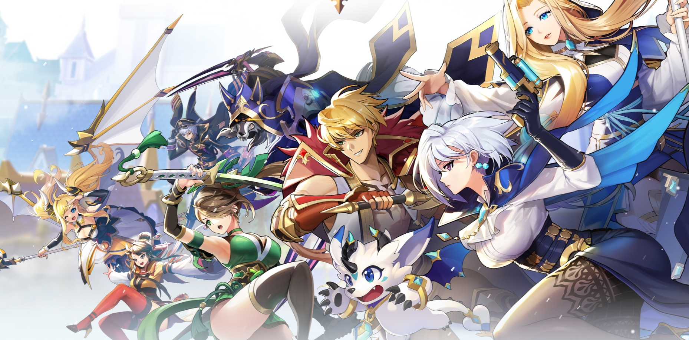

PROJECT OVERVIEW
ARGENT TWILIGHT
3D 애니메이션풍 캐릭터 수집과 전략적 턴제 전투 기반 모바일 RPG
참여 기간 · 2022.5 — 2023.3
MY WORK
01 / CINEMATIC PRODUCTION
- Layout
시네마틱 컷 구성·장면 배치 및 카메라·캐릭터 동선 설계
- Motion Capture
시네마틱 모션 캡처 촬영 참여
- Detail Animation
레이아웃을 바탕으로 캐릭터 동작·연기 구체화 및 디테일 애니메이션 제작
아르젠트 트와일라잇 — 연출 의도
이 장면에서 여인은 사랑하는 사람을 자신의 손으로 봉인해야 합니다. 레이아웃을 보며 제가 가장 오래 고민한 것은 봉인을 행하는 사람의 마음이었습니다. 관객이 그 행동을 따라가면서 여인이 겪는 갈등도 함께 느낄 수 있어야 했습니다.
기존 모프 타겟으로 표현할 수 있는 범위를 살핀 뒤, 여인의 연기와 그 연기를 담는 카메라 구도를 함께 제안했습니다. 레이아웃에서 잡은 감정의 흐름을 디테일 애니메이션까지 이어 완성했고, 인물의 감정선이 잘 전달된다는 평가를 받았습니다.